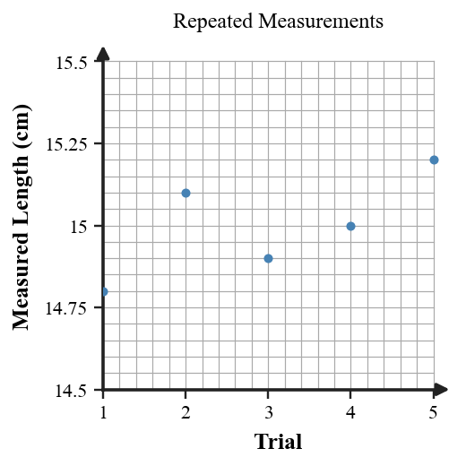

1. A student notes, “The pointer moved from 4.0 cm to 5.5 cm.” Identify the type of scientific statement this is.
2. Define inference in a way that distinguishes it from a direct observation.
3. What is the scientific meaning of a testable claim?
4. Name the term for a general rule or principle that summarizes a pattern repeatedly supported by evidence.
5. State one purpose of a scientific model.
6. During an eclipse, two observers record the curved edge of Earth’s shadow on the Moon. Explain how the recorded shape can serve as evidence for an inference without being the inference itself.
7. A student says, “This model cannot be useful because it is not a perfect copy of the real system.” Use the purpose of models to correct the statement.
8. Write a testable physics claim about an easily measured classroom situation. Then state one result that would make you question or reject the claim.
9. Use the repeated-measurement figure. Explain why the slightly different values can still provide useful evidence, and identify one pattern the measurements support.

10. A relationship is written as a formula. Explain how the formula can help organize thinking even before any numbers are substituted.
11. A website claims that a certain effect is real but says the effect disappears whenever anyone tries to measure it. Evaluate whether this is a useful scientific explanation and justify your judgment using testability.
12. Two groups use the same formula but reach different conclusions because one group measured carefully and the other estimated several values without checking assumptions. Explain why correct algebra alone cannot decide which conclusion is better supported.
13. Which sentence contains an inference?
14. Which is the best example of evidence?
15. Which revision makes the claim “This object behaves strangely” more testable?
16. Why can a scientific hypothesis still be valuable if later evidence shows it is wrong?
17. Which situation provides the strongest support for a model?
18. A claim is supported by one measurement but contradicted by several careful repeats. What is the best scientific response?
19. Which statement best describes the role of a formula?
20. Why should assumptions behind a formula be identified?